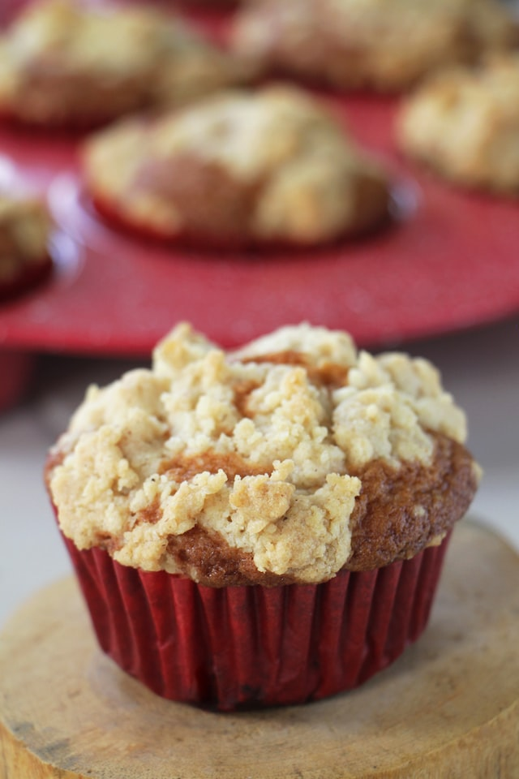

Eggs are one of my favorite foods. Here is a recipe for deliciously rich scrambled eggs
|  | |
| Photo by Christian Coquet on Unsplash | |
Mankind has used eggs for at least five thousand years. It is known for sure that ostrich eggs were fried by fire in ancient Egypt. The Romans used fried eggs as a dessert with honey. The ancestors of the populace of modern Iran mixed the yolk with milk and spices, and the French, in the middle of the seventeenth century, came to call it an omelet. It was the French who perfected this dish by adding mushrooms, fresh vegetables, and grated cheese.
Please contact us if you would like more information.
|
Address A location in the United States St. Paul, Minnesota, MN |
| New York | Los Angeles | Kentucky | |
|---|---|---|---|
| January | Friday | Sunday | Tuesday |
| February | Saturday | Wednesday | |
| Tuesday | Wednesday | Saturday | |